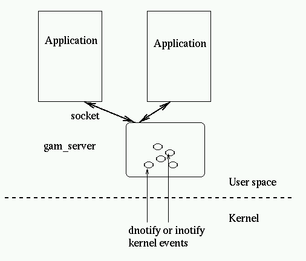
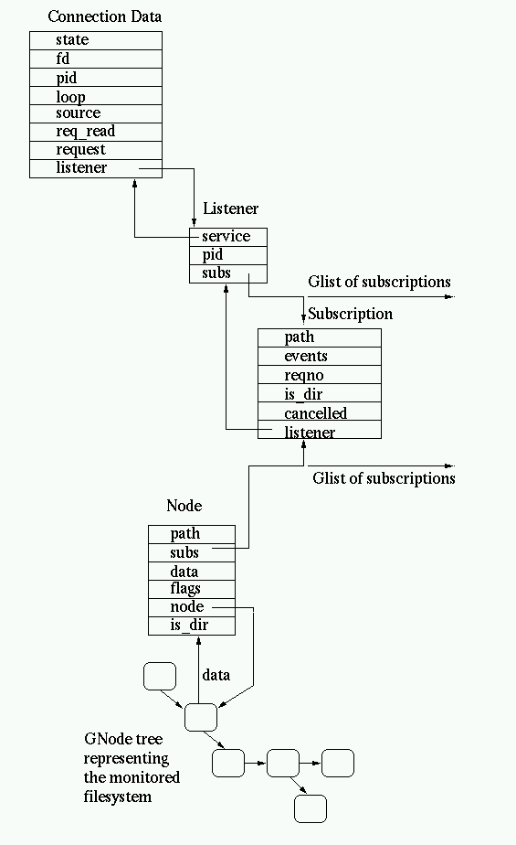

gamin uses a client server model, this is in a large measure justified by
the inappropriate dnotify kernel API way to signal modification events to an
application but also to share kernel signal when multiple application
monitors the same resource. It also allow to fine tune and filters event flow
in the daemon, potentially minimizing resource consumption in
applications.  Internally the gam_server maintain various data structures: - A tree of monitored nodes, using both GamNode structure containing
specific informations (like the path, the subscriptions list for that
node, monitoring data and whether it's a directory), the tree itself is
based on a GNode N-ary tree.
- Per connection data (GamConnData) one per connected socket. The data
includes state, connection informations (file descriptor, Glib I/O
Channel, pid of the application), and potential unprocessed yet data
request from the socket.
- Listener information, keeps the list of subscriptions for the connected
application, this could probably be merged in the connection data.
- For each path monitored by an application, a specific GamSubscription
structure is maintained. The subscriptions are referenced both from the
monitored nodes tree and from the listeners.
 Daniel Veillard |